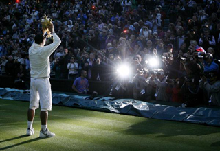
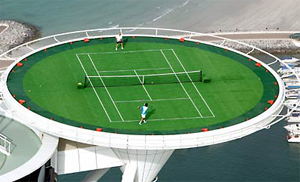

← Bài trước: The Inside Out Backhand | 🏠 Mental Game Trang chủ | Bài tiếp: → The Look
Thang tiến bộ
Thư viện kiến thức quần vợt thống nhất — Cơ bản, Phân tích kỹ thuật, Thư viện tham khảo và nhiều hơn nữa
Thang tiến bộ
David Sammel

Việc giành được một set nữa đã giúp Nadal trở thành vô địch Wimbledon.
Rafael Nadal là một tay vợt tài năng. Nếu bạn nghe các cuộc phỏng vấn của anh, anh luôn nói về việc phải làm việc chăm chỉ mỗi ngày để cải thiện.
Nadal luôn nhìn vào những gì anh có thể đạt được. Anh không bao giờ nghĩ về những gì mình phải mất, mà chỉ nghĩ về những gì mình có thể đạt được.
Ví dụ là trận thắng 5 set của anh trước Roger Federer tại Wimbledon năm 2008. Trong trận đấu đó, Nadal đã dẫn trước 2-0 và bỏ lỡ hai điểm trận. Sau trận đấu, một nhà báo quần vợt đã hỏi anh cách mà anh đã vượt qua "sự thất vọng" đó.
Đáp án của anh là:
"Sự thất vọng? Bạn điên à? Tôi chỉ còn một set nữa để giành chiến thắng. Tôi đã mơ ước giành được chức vô địch Wimbledon suốt đời, và giờ cơ hội vẫn còn rất lớn! Tôi tập trung vào việc giữ serve của mình và tôi biết rằng nếu tôi có thể giữ serve thì khi điểm số là 3-3, Roger phải biết anh ấy phải đánh bại tôi. Và điều này khó khăn phải không?"
Nadal đã chơi để giành được một chức vô địch Wimbledon và anh đã thành công. Nhưng làm thế nào để người chơi bình thường có được tư duy như vậy? Làm thế nào để bạn phát triển tư duy GAIN?
Đề xuất của tôi là hình dung và hiểu rõ những điều sau đây. Hãy tưởng tượng một cái thang mà bạn phải leo lên đỉnh một tòa nhà cao 250 mét. Có một bệ nghỉ mỗi 30 mét.

Hãy tưởng tượng một cái thang lên đỉnh tòa nhà.
Hãy tưởng tượng rằng mỗi trận đấu bạn chơi tương đương với một sợi dây thang. Nếu bạn thua trận, bạn vẫn ở cùng một vị trí - bạn không mất gì. Tương tự với mỗi set, game hoặc điểm.
Nếu mục tiêu của bạn là cải thiện thì bạn chỉ có thể leo lên thang. Mỗi trận thua đơn giản là bạn phải làm việc chăm chỉ hơn để cải thiện và giành được một sợi dây thang. Bạn chỉ có thể giành được một điểm, game, set hoặc trận đấu.
Hậu quả của việc không thắng là đơn giản là bạn vẫn ở cùng một vị trí trên thang. Bạn không mất gì.
Điều đầu tiên mà hầu hết mọi người sẽ làm là nhìn lên thang và tòa nhà để xem nhiệm vụ sẽ lớn đến mức nào. Bạn nhìn thấy mục tiêu. Điều này本身 đã đáng sợ nên một cách hợp lý, bạn quyết định tập trung vào mục tiêu quá trình, đó là leo lên bệ nghỉ đầu tiên 30 mét.
Ở đầu, bạn còn tươi mới và không có áp lực bên ngoài đáng kể. Chiều cao chưa phải là vấn đề, thực tế sau 10-15 mét, bạn có thể thưởng thức phong cảnh và gió cũng không được chú ý nhiều hoặc thậm chí là chào đón. Những tay vợt có năng lực và có huấn luyện viên tốt thường tiến bộ nhanh chóng ở các cấp độ thấp và việc leo thang chủ yếu là thú vị.
Khi bạn leo lên cao hơn trên thang, nhìn xung quanh quá nhiều có thể gây ra vấn đề. Bạn bắt đầu so sánh bản thân với những tay vợt khác và xem họ đã leo lên bao xa trên thang của riêng họ. Bạn nhận thấy gió và lo lắng về cảm giác của nó ở cao độ hơn.

Khi leo thang, mặt đất có thể trông xa xôi.
Mặt đất có thể trông xa xôi. Nếu cánh tay và chân của bạn cảm thấy hơi mệt mỏi, bạn tự hỏi mình có đủ mạnh mẽ không. Bạn có thể bắt đầu cảm thấy cô đơn vì bạn bè bị bỏ lại phía sau. Giải pháp là hãy thu hẹp phạm vi tập trung của bạn vào sợi dây thang tiếp theo và không có gì khác cho đến khi bạn đạt được mục tiêu bệ nghỉ nơi bạn có thể đánh giá và bổ sung năng lượng cho giai đoạn tiếp theo. Hãy tưởng tượng bạn được kết nối với huấn luyện viên và thế giới rộng lớn thông qua một tai nghe có thể điều chỉnh và điều chỉnh tần số - cũng như giới hạn bất kỳ đầu vào không sản xuất nào.
Khi bạn lên đến khoảng 150 mét, phương pháp huấn luyện trở nên ngày càng quan trọng, và kỷ luật của bạn trở nên quan trọng đối với thành công của bạn. Huấn luyện viên của bạn cần giúp bạn hiểu đầu vào, lựa chọn và phân tâm và khuyến khích bạn tập trung vào việc cải thiện và tiếp tục làm việc cho đến khi bạn có thể leo lên sợi dây thang tiếp theo.
Bất kể điểm số như thế nào, hãy làm mọi thứ bạn có thể để giành được điểm tiếp theo. Nếu bạn đủ điểm, bạn giành được một game. Lại một lần nữa, theo lời của Rafael Nadal "bạn chỉ cần cố gắng chơi chắc chắn và tập trung điểm cho điểm. Có vẻ rất chán nhưng đó là điều đúng đắn phải làm."
Không có giá trị nào trong việc tập trung vào việc bạn đã bị kẹt trên cùng một sợi dây thang bao lâu. Công việc là trở nên tốt hơn và mạnh mẽ hơn. Mỗi tay vợt đều gặp phải những trở ngại và bị cuốn hút bởi ý tưởng từ bỏ, hoặc quay lại xuống thang, hoặc định cư ở một trong những bệ nghỉ.

Tập trung điểm cho điểm: chán nhưng đúng.
Đừng sợ hoặc lo lắng về những tay vợt khác leo nhanh hơn bạn. Tiến bộ là cá nhân và sự tiến bộ nhanh không có nghĩa là nó sẽ tiếp tục ở cùng một tốc độ.
Tài năng hiếm có có thể đạt đến những độ cao ngưỡng mộ một cách nhanh chóng chỉ để chậm lại gần đỉnh không phải là mối quan tâm của bạn. Mục tiêu của bạn không phải là những người khác. Mục tiêu của bạn là sợi dây thang tiếp theo trên thang của bạn. Cho dù mục tiêu của bạn là trở thành số một thế giới hay vô địch câu lạc bộ, đó là thang mà bạn phải leo. Bạn leo kém khi bạn không tập trung hoàn toàn vào thang của mình và giành được một nhịp điệu tốt, cho dù đó là tốc độ của một con rùa hay một con thỏ.
Gió và mưa sẽ làm chậm bạn lại và khiến những thời điểm nhất định trở nên khó chịu, lạnh lẽo, cô đơn và thang trượt có thể đáng sợ đến mức khủng khiếp nhưng hãy kiên trì vì mặt trời luôn quay lại.
Thành công cũng có thể khiến bạn sợ độ cao. 200 mét lên có thể rất khó chịu đặc biệt khi bạn nhìn xuống. Có thể là một nơi cô đơn vì bạn biết rất ít người và trong số những người xung quanh có thể trông không thân thiện, dường như dè dặt với bạn, người mới đến hoặc người mới tham gia bữa tiệc của họ. Họ sẽ thử thách quyết tâm của bạn để ở lại với họ. Lại một lần nữa, câu trả lời tốt nhất là làm việc chăm chỉ và giữ tập trung vào việc leo thang của bạn.
Càng lên cao, lựa chọn tần số càng lớn và với điều này là trách nhiệm phải chọn rộng rãi. Bạn sẽ điều chỉnh vào ai?

Giữa các giai đoạn, chỉ cần nhìn xuống một cách lạ lùng.
Có những cá tính tiêu cực trên hành trình leo lên thang này người nói những lời nghi ngờ. Một cách thú vị, điều này có thể là bạn bè, huấn luyện viên, hoặc cha mẹ, thậm chí là bất kỳ ai mà bạn hoặc hành động của họ ngụ ý rằng đã đạt được tiềm năng của bạn: rằng mục tiêu quá cao hoặc rằng chỉ có những người có may mắn hoặc tài năng hơn mới có thể leo lên đỉnh.
Có nhiều người cố ý hoặc vô ý làm suy yếu quyết tâm của bạn bằng cách nhấn mạnh tất cả những lý do tại sao bạn không thể làm được. Tránh bất kỳ ai khuyến khích bạn dừng lại, thưởng thức phong cảnh, quên mục tiêu bệ nghỉ tiếp theo lên hoặc cố gắng giới hạn bạn ở mức mong muốn của họ.
Người đó có thể gần bạn như người yêu, bạn trai, hoặc người bạn đời có những lý do khác để dừng bạn như ghét thời gian tách biệt hoặc thời gian tập luyện, khiến họ cảm thấy như một ưu tiên thứ hai. Họ có thể sợ mất bạn nếu bạn leo quá cao, đến một nơi mà họ sẽ cảm thấy không thoải mái và nơi lựa chọn của bạn mở rộng.
Ngoài một cái nhìn lạ lùng, không cần thiết phải nhìn xuống hoặc lên giữa các giai đoạn. Khi bạn đạt được một khu vực nghỉ ngơi, hãy thưởng thức khoảnh khắc, bổ sung năng lượng, đánh giá mục tiêu tiếp theo và không ngồi lại quá lâu trước khi bắt đầu leo lại, mắt luôn tập trung vào sợi dây thang tiếp theo.
Ngay cả những tay vợt vĩ đại nhất cũng gặp khó khăn nếu cuộc sống của họ trở nên phức tạp. Rất khó để thi đấu hiệu quả nếu có quá nhiều phân tâm. Tiger Woods là một ví dụ về một lực lượng thống trị mà khả năng thi đấu của anh ấy bị suy yếu do những gián đoạn khổng lồ trong cuộc sống riêng tư của anh ấy.
Một lực lượng thống trị có thể bị suy yếu bởi những gián đoạn trong cuộc sống riêng tư.
Sau thành công đáng kể, một mối nguy hiểm thực sự là những người hâm mộ, những người nói với bạn rằng bạn đã làm được, rằng phần còn lại của việc leo thang sẽ dễ dàng, rằng bạn có thể làm những việc khác và rằng đội ngũ hỗ trợ hiện tại của bạn có thể không đánh giá được độ sâu của tài năng của bạn. Họ đề xuất những thay đổi bằng cách ngụ ý rằng mặc dù họ đã làm một công việc tuyệt vời, bạn đã vượt quá khả năng của họ. Tin nhắn ngầm là họ biết và có thể hướng dẫn bạn đến thời đại lớn với những bí mật bên trong.
Tình huống tồi tệ hơn là nếu đội ngũ xung quanh bạn bị say sưa bởi những độ cao và tham gia vào những lời tự khen ngợi và phân tâm, không còn làm đất và hướng dẫn bạn nữa, mà là thúc đẩy những kỳ vọng không thực tế thay vì mong muốn làm việc chăm chỉ hơn để leo lên những sợi dây thang cuối cùng.
Đỉnh của tòa nhà là một thành tựu tuyệt vời. Tuy nhiên, nhiều người thành công sẽ nói với bạn rằng mặc dù phong cảnh rất tuyệt vời và đáng thưởng thức, bạn sẽ nhanh chóng nhận thấy có một cây cầu bạn có thể băng qua để đến một tháp lớn hơn và bạn phải quyết định liệu có nên cố gắng leo lại hay không, vì nếu không ai khác chắc chắn sẽ làm. Tập trung và khả năng cải thiện liên tục là chìa khóa để đạt được và duy trì các cấp độ cao.
Việc leo thang dễ dàng hơn nhiều nếu bạn điều chỉnh vào những giọng nói khuyến khích hỗ trợ bạn, nhưng đẩy bạn để cải thiện một cách nhẹ nhàng. Tập trung và kỷ luật sẽ chặn những giọng nói phá hủy. Giữ cho nó đơn giản bất kể bạn đang ở đâu trên thang. Giành được điểm tiếp theo, game tiếp theo, set tiếp theo và trận đấu tiếp theo.

David Sammel là một huấn luyện viên quần vợt chuyên nghiệp đã đăng ký ATP và là một cố vấn trên toàn phổ điểm của thể thao chuyên nghiệp. Anh ấy đã dành 25 năm huấn luyện các tay vợt quốc tế, đã là huấn luyện viên quốc gia cho Hiệp hội Quần vợt, và được mệnh danh là một trong 50 huấn luyện viên hàng đầu thế giới bởi Nike. Anh ấy là huấn luyện viên trưởng của Team Bath-Monte Carlo Tennis Academy, tọa lạc tại Đại học Bath, Bath, Anh. Anh ấy là một nhà đóng góp thường xuyên trong truyền thông Anh và bình luận quần vợt và là biên tập viên cho Tennishead Magazine.
Nhấp vào đây để biết thêm thông tin về Học viện

Khi bạn nghĩ về những vận động viên và người nổi tiếng thành công nhất mọi thời đại, hầu hết họ đều có một sự hiện diện và sự bất khả chiến bại trong cách họ thể hiện bản thân trong thể thao và với thế giới. Đôi khi bị nhầm lẫn với sự kiêu ngạo, sự tự tin này là cần thiết để thành công trong thể thao chuyên nghiệp và trong cuộc sống nói chung.
Những người giỏi nhất tin rằng họ là những người giỏi nhất và họ khiến đối thủ của mình tin rằng họ là những người giỏi nhất. Locker Room Power: Xây dựng tâm trí của một vận động viên, mô tả và phân tích triết lý huấn luyện của David, được vẽ từ sự đam mê không ngừng của anh ấy để giúp mọi người cải thiện kỹ năng của họ, sử dụng kinh nghiệm, kiến thức và sự hiểu biết rộng lớn của anh ấy về khả năng tinh thần cần thiết để thành công như một vận động viên thể thao chuyên nghiệp.
Nhấp vào đây để đặt hàng!
Nguồn: tennisplayer.net lưu trữ — The Ladder of Gain.docx (Thư viện giảng dạy của John Yandell, 2002-2022). Trích xuất và hiển thị dưới dạng HTML cho Tennis Future Lab.